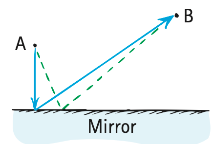
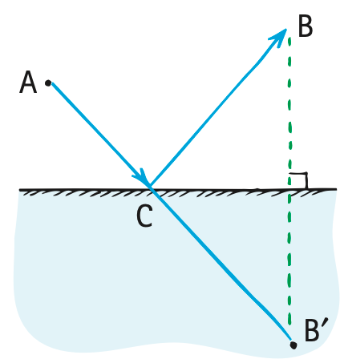

Chapter 28 Opener: Pierre de Fermat
French lawyer and mathematician Pierre de Fermat (pronounced fer-mah) was born in 1601. He attended the University of Toulouse before moving to Bordeaux in his twenties. He was fluent in Latin, Greek, Italian, and Spanish and was well recognized for his written verse in several languages.
In 1629, he produced important mathematical work on the ideas of maxima and minima, which turned out to be useful to Newton, as well as to Leibniz, when they independently developed calculus. Through his correspondence with Blaise Pascal in 1654, Fermat helped lay the fundamental groundwork for the theory of probability.
Pierre de Fermat portrait was omitted because no matching captured image was supplied.
To mathematicians, Fermat is best remembered for his famous “Last Theorem,” a special case of which states that the sum of two cubes of whole numbers cannot be the cube of another whole number. For more than 300 years, mathematicians were tantalized by a marginal note in Latin in one of Fermat’s books, which is translated as “I have a truly marvelous proof of this proposition which this margin is too narrow to contain.” Not until 1994 was the theorem proved (by Andrew Wiles of Princeton University) using methods unavailable to Fermat, so it seems unlikely that Fermat really did have a proof. This doesn’t diminish the genius that he showed in many other ways.
Fermat had a unique way of looking at paths of light. He stated that of all the possible paths that light can travel from one point to another, it travels the path that requires the least time. Reflection and refraction, the chief topics of this chapter, are nicely understood with this principle.
28.1 Reflection

Most of the things we see around us do not emit light of their own. They are visible because they reemit light that reaches their surface from a primary source, such as the Sun or a lamp, or from a secondary source, such as the illuminated sky. When light falls on the surface of a material, it is either reemitted without change in frequency or absorbed into the material and converted to heat.¹ We say that light is reflected when it is returned into the medium from which it came—this process is reflection.
When sunlight or lamplight illuminates print on a paper page, electrons in the atoms of the paper and ink vibrate more energetically in response to the oscillating electric fields of the illuminating light. The energized electrons reemit the light by which you see the page. When the page is illuminated by white light, the paper appears white, which reveals that the electrons reemit all the visible frequencies. Very little absorption occurs. The ink is a different story. Except for a bit of reflection, it absorbs all the visible frequencies and therefore appears black.
Principle of Least Time

The idea that light takes the quickest path in going from one place to another was formulated by Pierre de Fermat. His idea is now called Fermat’s principle of least time.
We can understand reflection with Fermat’s principle. Consider the following situation: In Figure 28.2, we see two points, A and B, and an ordinary plane mirror beneath. How can we get from A to B most quickly—that is, in the shortest time? The answer is simple enough: Go straight from A to B! But, if we add the condition that the light must strike the mirror in going from A to B in the shortest time, the answer is not so easy. One way would be to go as quickly as possible to the mirror and then to B, as shown by the solid lines in Figure 28.3. This gives us a short path to the mirror but a very long path from the mirror to B. If we instead consider a point on the mirror a little to the right, we slightly increase the first distance, but we considerably decrease the second distance, so the total path length shown by the dashed lines—and therefore the travel time—is less. How can we find the exact point on the mirror for which the time is least? We can find it very nicely by a geometric trick.

We construct, on the opposite side of the mirror, an artificial point, B′, which is the same distance “through” and below the mirror as point B is above the mirror (Figure 28.4). The shortest distance between A and this artificial point B′ is simple enough to determine: It’s a straight line. Now this straight line intersects the mirror at a point C, the precise point of reflection for the shortest path and hence the path of least time for the passage of light from A to B. Inspection will show that the distance from C to B equals the distance from C to B′. We see that the length of the path from A to B′ through C is equal to the length of the path from A to B bouncing off point C along the way.

Inspection of Figures 28.4 and 28.5 and a little geometric reasoning will show that the angle of incident light from A to C is equal to the angle of reflection from C to B.

¹ Another less common fate is absorption followed by reemission at lower frequencies—fluorescence (see Chapter 30).
² This material and many of the examples of least time are adapted from R. P. Feynman, R. B. Leighton, and M. Sands, The Feynman Lectures on Physics, Vol. I, Chap. 26 (Reading, MA: Addison-Wesley, 1963).